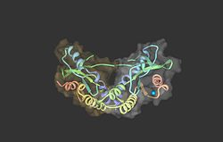

Stimulator of interferon genes(STING), also known as transmembrane protein 173 (TMEM173) and MPYS/MITA/ERIS is a protein that in humans is encoded by the TMEM173 gene
STING plays an important role in innate immunity. STING induces type I interferon production when cells are infected with intracellular pathogens, such as viruses, mycobacteria and intracellular parasites.